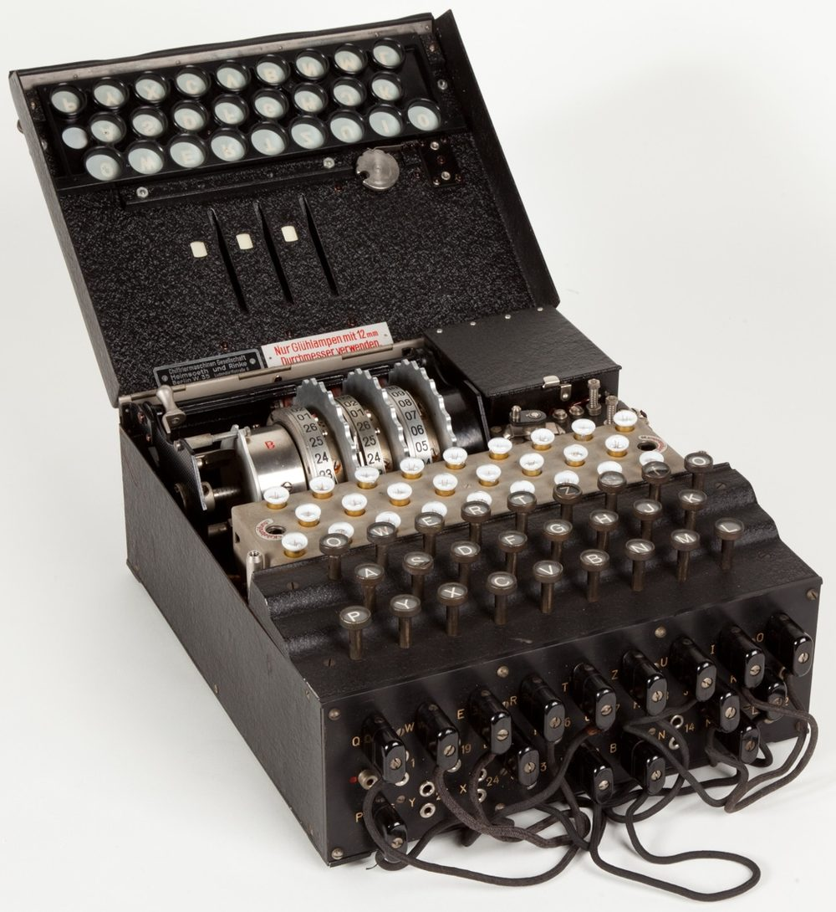
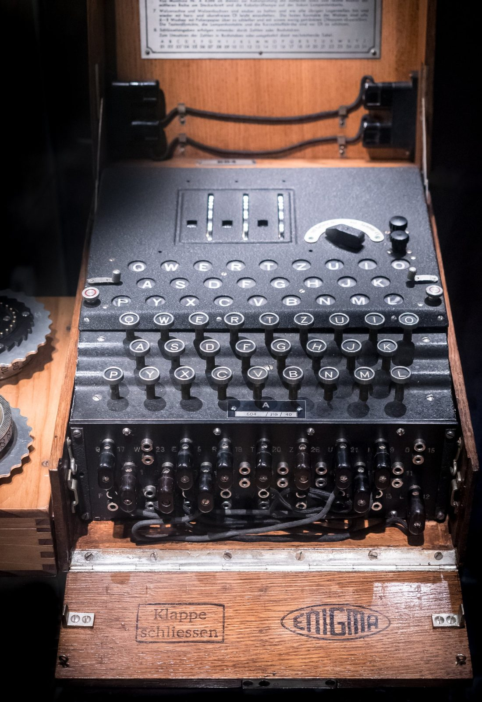
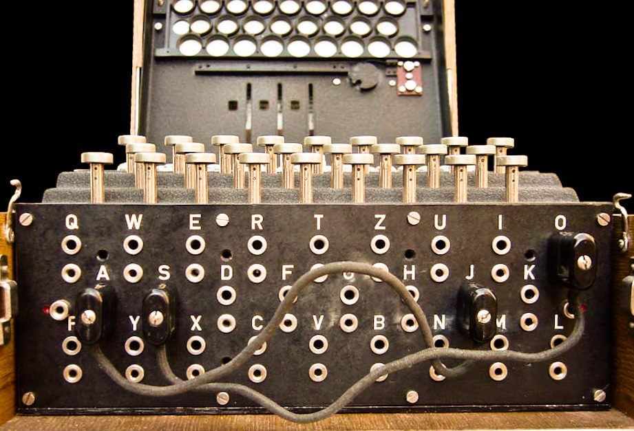
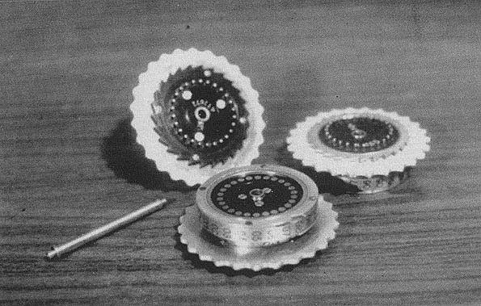
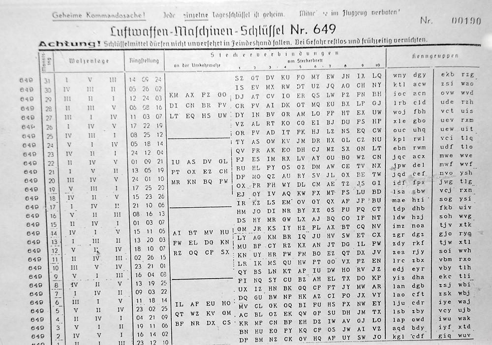

Tippe auf der Tastatur unten oder auf deinem Computer. Du siehst, wie der Strom durch Steckbrett, drei Walzen und die Umkehrwalze läuft – und warum derselbe Buchstabe beim nächsten Tastendruck etwas ganz anderes ergibt.
Getippte Buchstaben: 0 · davon zu sich selbst verschlüsselt: 0
Die Enigma ist elektrisch: Jede Taste schliesst einen Stromkreis, und am Ende leuchtet genau eine Lampe. Dazwischen passiert in Bruchteilen einer Sekunde Folgendes:
Wegen der Umkehrwalze ist die Enigma selbstinvers: Wer die Maschine gleich einstellt und den Geheimtext eintippt, sieht auf dem Lampenfeld den Klartext. Probiere es aus: Tippe ein Wort, klicke «Zur Grundstellung» und tippe die leuchtenden Buchstaben.
Eine Enigma I, wie sie Heer und Luftwaffe verwendeten, wog rund 12 kg und steckte in einem Holzkasten. Diese Teile gehörten dazu:


26 Tasten, keine Ziffern, keine Leerzeichen. Zahlen wurden ausgeschrieben, Satzzeichen durch Buchstabenfolgen ersetzt, etwa X für einen Punkt.
26 Glühlämpchen unter Buchstabenfenstern. Die Enigma druckte nichts: Ein zweiter Soldat schrieb jeden leuchtenden Buchstaben von Hand mit.
Mit 10 Kabeln wurden 20 Buchstaben paarweise vertauscht. Es vervielfachte die Zahl der möglichen Einstellungen enorm.
Fünf verschieden verdrahtete Walzen lagen in der Kiste, drei davon wurden eingesetzt. Jede hat einen Buchstabenring und eine Übertragskerbe.
Fest eingebaut, sendet den Strom zurück. Sie macht das Gerät selbstinvers – und ist zugleich seine grösste Schwäche.
Eine 4,5-Volt-Flachbatterie versorgte die Lämpchen. So war die Maschine auch im Feld ohne Netzstrom einsetzbar.
Ohne den geheimen Tagesschlüssel war die Maschine nutzlos. Die Tafeln galten einen Monat und waren streng geheim.
Der Geheimtext wurde in Fünfergruppen gemorst. Jeder konnte mithören – die Sicherheit lag allein in der Verschlüsselung.


Beide Seiten mussten die Maschine exakt gleich einstellen. Dafür erhielten alle Funkstellen eines Netzes dieselbe Schlüsseltafel. Jede Zeile ist ein Tagesschlüssel und legt vier Dinge fest:

Zum Ausprobieren eine Tafel im gleichen Aufbau:
| Datum | Walzenlage | Ringstellung | Steckerverbindungen | Kenngruppen |
|---|
Welche drei der fünf Walzen in welcher Reihenfolge eingesetzt werden, z. B. II I III.
Wie der Buchstabenring gegenüber der inneren Verdrahtung verdreht ist, z. B. 01 01 01.
Welche 10 Buchstabenpaare am Steckbrett verbunden werden.
Dreibuchstabige Gruppen, an denen der Empfänger erkennt, welcher Schlüssel für einen Funkspruch gilt.
Mit «Einstellen» überträgst du eine Zeile direkt in den Simulator oben.
Hätten alle Funksprüche eines Tages mit derselben Grundstellung begonnen, hätte ein Gegner Hunderte Texte mit identischer Einstellung erhalten. Deshalb wählte jeder Funker für jede Nachricht einen eigenen Spruchschlüssel. Vereinfacht, nach dem Verfahren ab 1940:
WZA, und einstellen.SXT, eintippen. Ergebnis z. B. UHL.SXT drehen.WZA UHL, dann den Geheimtext in Fünfergruppen.WZA) drehen.UHL eintippen – die Lampen zeigen den Spruchschlüssel SXT.SXT drehen.Pro Maschine brauchte es also eine Schlüsseltafel, zwei Bediener, einen Funker und viel Disziplin. Genau hier entstanden Fehler: bequeme Spruchschlüssel wie AAA oder Tastaturreihen, immer gleiche Formulierungen und das Wiederholen von Nachrichten mit altem Schlüssel.
Wie viele verschiedene Tagesschlüssel gab es bei einer Enigma I mit fünf Walzen und zehn Steckerkabeln?
Das sind rund 159 Trillionen Möglichkeiten:
158’962’555’217’826’360’000
Selbst wenn man eine Million Einstellungen pro Sekunde prüfen könnte, bräuchte man rund fünf Millionen Jahre. Durchprobieren war also unmöglich – die Enigma wurde anders geknackt.
Weil die Umkehrwalze den Strom nie auf denselben Kontakt zurückschickt, wird ein A nie zu einem A verschlüsselt. Schau oben auf den Zähler: Egal wie viel du tippst, er bleibt bei 0. Das klingt harmlos, verrät aber viel.
Cribs – vermutete Klartextstücke. Viele Funksprüche begannen gleich, etwa mit Wetterberichten oder «KEINE BESONDEREN EREIGNISSE». Legt man ein solches Wort unter den Geheimtext, kommen nur Positionen in Frage, an denen kein Buchstabe auf sich selbst fällt. Mit wenigen Stellen bleiben so nur noch wenige Kandidaten übrig.
Ein riesiger Schlüsselraum allein macht ein Verfahren nicht sicher. Strukturelle Eigenschaften (kein Buchstabe zu sich selbst), vorhersehbare Texte und Bedienfehler reichten aus. Heutige Verfahren wie AES werden deshalb öffentlich geprüft – nach dem Prinzip von Kerckhoffs: Sicherheit darf nur vom Schlüssel abhängen, nicht von der Geheimhaltung der Maschine.
Eine Funkstelle empfängt diesen Text. Tagesschlüssel: Walzenlage II I III, Ringstellung 01 01 01, Stecker AE BF CM DQ HU JN LX PR SZ VW, Spruchschlüssel KZU.
PIMLE ZGAJZ RRJOH DJUSN YJ
TREFFPUNKT MENSA ZEHN UHR – ohne Leerzeichen getippt ergibt sich TREFFPUNKTMENSAZEHNUHR.Stelle die Walzen auf A A A und drücke fünfmal die Taste A. Warum leuchten fünf verschiedene Lampen? Was unterscheidet die Enigma damit von der Caesar-Verschlüsselung?
BDZGO (bei Walzenlage I II III ohne Stecker). Die rechte Walze dreht sich vor jedem Tastendruck, darum gilt für jeden Buchstaben ein anderes Ersetzungsalphabet. Caesar ersetzt immer gleich (monoalphabetisch) und lässt sich mit einer Häufigkeitsanalyse knacken. Die Enigma ist polyalphabetisch mit einer sehr langen Periode von 26 · 25 · 26 = 16’900 Schritten.